This objective of this article is to present a detailed description of Photometric frequency analysis and why it is important, along with how do we do data visualization on large datasets.
This article contains a few excerpts from scikit-learn Photometric Frequency Analysis post. Also, I used Data Driven Astronomy as a reference while composing this post.
In the current standard cosmological model, the universe began nearly 14 billion years ago, in an explosive event commonly known as the Big Bang. Since then, the very fabric of space has been expanding, so that distant galaxies appear to be moving away from us at very fast speeds. The uniformity of this expansion means that there is a relationship between the distance to a galaxy, and the speed that it appears to be receding from us. This recession speed leads to a shift in the frequency of photons, very similar to the audio doppler shift that can be heard when a car blaring its horn passes by. If a galaxy were moving toward us, its light would be shifted to higher frequencies, or blue-shifted. Because the universe is expanding away from us, distant galaxies appear to be red-shifted: their photons are shifted to lower frequencies.
We're going to use decision trees to determine the redshifts of galaxies from their photometric colors. We'll use galaxies whose accurate spectroscopic redshifts have been calculated as our gold standard
We will be using flux magnitudes from the Sloan Digital Sky Survey (SDSS) catalogue to create color indices. Flux magnitudes are the total flux (or light) received in five frequency bands (u, g, r, i and z).
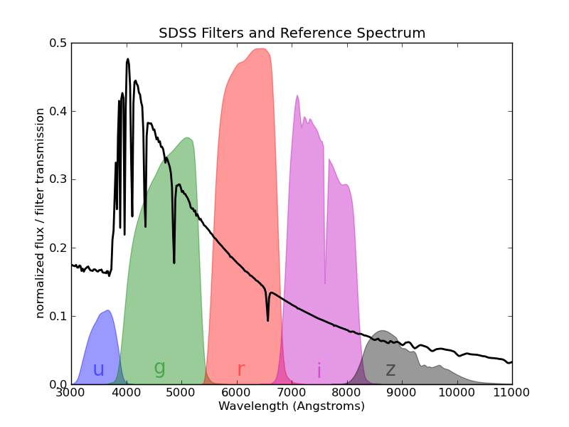
The astronomical color (or color index) is the difference between the magnitudes of two filters, i.e. u - g or i - z. This index is one way to characterize the colors of galaxies. For example, if the u-g index is high then the object is brighter in ultra violet frequencies than it is in visible green frequencies.
Color indices act as an approximation for the spectrum of the object and are useful for classifying stars into different types.
So, lets dive a little deeper into the SDSS data.
We can load the data using numpy and then convert it into a dataframe and view the first 10 rows using the head() function of pandas.
data = np.load('sdss_galaxy_colors (1).npy')
df = pd.DataFrame(data)
df.head(10)Also, its a good practice to look into the statistical measures about our sample. They usually give us more information about the distribution of data.
Also, we can visualize the distribution of data in different frequency bands.
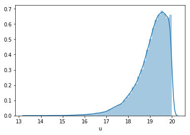
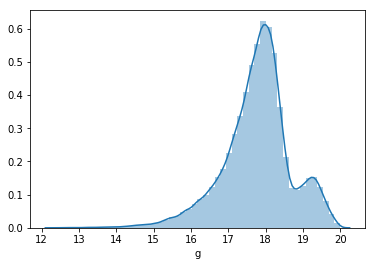
The above images show the frequency distribution of u and g bands respectively.
But we could also plot the distribution of all the frequency bands together.
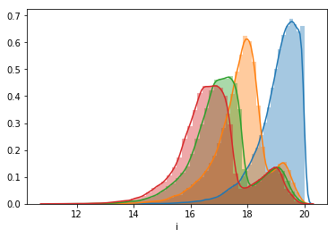
Similarly, we can plot all the different frequency bands against the redshift.
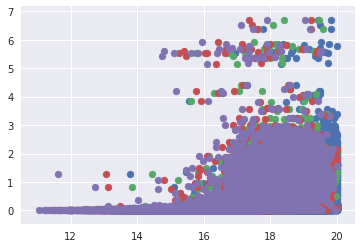
Now to obtain different colors, we'll subtract the frequency bands, i.e. u-g, g-r etc. After plotting this, this looks like this.
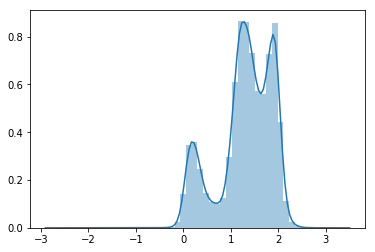
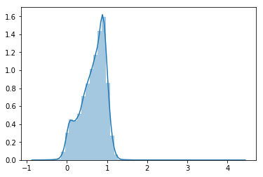
We can again plot them together to obtain something like this.
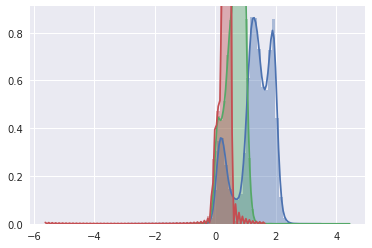
We can also plot a correlation of different features. This map gives us much needed understanding about what effect one parameter has on other parameter.
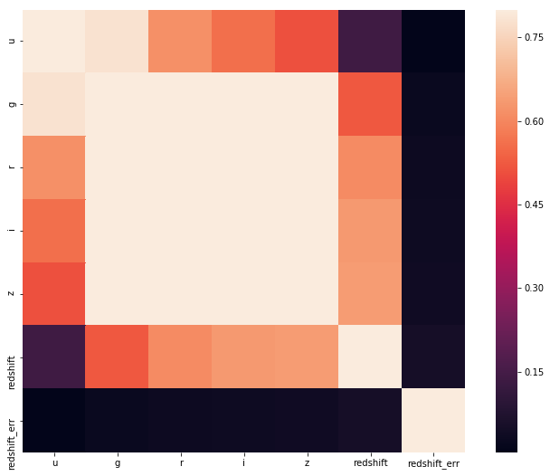
Also, we can plot a scatter plot of all the features combines.
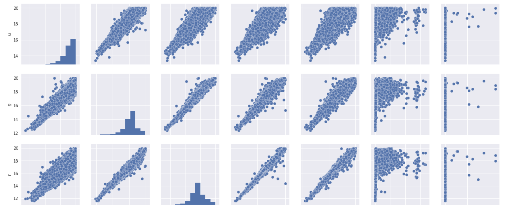
Enough with data visualization !! Lets write some code.
features = np.zeros((data.shape[0], 4))
features[:,0] = data['u'] - data['g']
features[:,1] = data['g'] - data['r']
features[:,2] = data['r'] - data['i']
features[:,3] = data['i'] - data['z']
targets = np.zeros(data.shape[0])
targets = data['redshift']Here we are creating features and targets for our classifier.
from sklearn.tree import DecisionTreeRegressor
dtr = DecisionTreeRegressor(max_depth=3)
model = dtrThen we import the DecisionTreeRegression from the scikit learn library and instantiate it with a maximum tree depth of 3. This is usually done to prevent overfitting.
Now lets divide our data into training and testing data so that we can see how well our classifier is performing.
# split the data into training and testing features and predictions
split = 45000
train_features = features[:split]
test_features = features[split:]
train_targets = targets[:split]
test_targets = targets[split:]
model.fit(train_features, train_targets)
# get the predicted_redshifts
predictions = model.predict(test_features)
print('Median difference: {:f}'.format(np.median(np.abs(test_targets - predictions))))When this chunk of code is executed, we get the result as Median difference: 0.038271 which is quite a good accuracy (almost 97%!!).
To understand the distribution of frequency band's difference (u-g etc.), we can further visualize them using the code below.
cmap = plt.get_cmap('YlOrRd')
redshift = data['redshift']
# Create the plot with plt.scatter and plt.colorbar
plot = plt.scatter(u_g, r_i, s=2, lw=0, c=redshift, cmap=cmap)
cb = plt.colorbar(plot)
cb.set_label('Redshift')
plt.xlabel('Colour index u-g')
plt.ylabel('Colour index r-i')
plt.title('Redshift (colour) u-g versus r-i')
# Set any axis limits
plt.xlim(-0.5, 2.5)
plt.ylim(-0.5, 1)
plt.show()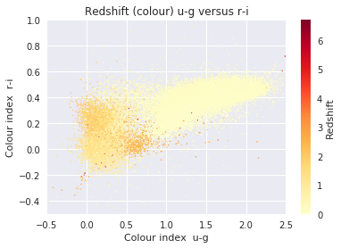
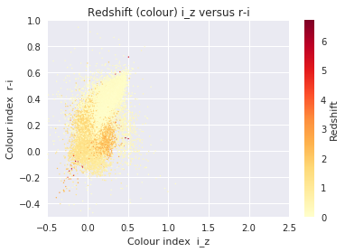
On the conclusion, Obtaining an accurate estimate of the redshift to each of these galaxies is a pivotal part for knowing the galaxy's history, composition and fate. Since there are so many extremely faint galaxies, there is no possibility of obtaining a spectrum for each one. Thus sophisticated photometric redshift codes will be required to advance our understanding of the Universe, including more precisely understanding the nature of the dark energy that is currently accelerating the cosmic expansion.